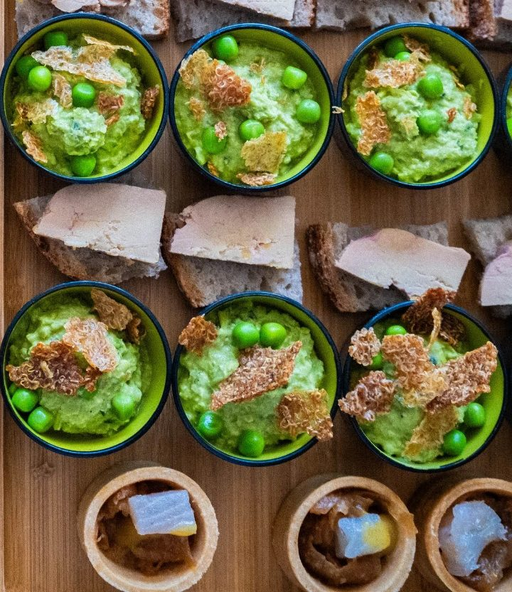

Design
system
Tous les composants du site Holocene, avec leurs règles et leurs états. Rien n'est inventé : couleurs, logos et typos viennent du brand book. Ce document dit comment les assembler pour que chaque page — et demain chaque nouvelle adresse — reste cohérente.
Les exemples suivent l'univers choisi ci-dessous : changez-le pour voir chaque composant dans ses quatre couleurs.
01. Couleurs
Quatre univers, une encre. Chaque univers a un fond, une fleur et une teinte claire. La fleur d'un univers devient le fond du suivant : food truck → traiteur → restaurant.
Fond : couleur de la page de l'univers.
Fleur : accent — carte mise en avant, pastille, bouton secondaire, onglet actif.
Clair : surfaces calmes — encadrés de carte, formulaires, alternance de sections.
Blanc : cartes posées sur un fond coloré.
Le texte est toujours noir sur les pastels (contraste supérieur à 15:1) et blanc uniquement sur le noir. Jamais de texte blanc sur une couleur pastel. Gris de texte autorisés : #2b2b2b et #4a4a4a sur clair, #cfcfcf et #e6e6e6 sur noir.
Pas de dégradés, pas de rouge ou de vert « système », pas de couleur hors charte. Pas deux fonds d'univers différents côte à côte, sauf pour présenter les trois univers ensemble.
02. Typographie
Deux familles de la charte, plus une ronde pour le texte courant en attendant la licence web de Nimbus Sans Round Regular.
Un restaurant, un traiteur, un food truck. Trois façons de manger local, de saison et fait maison.
Une carte qui change chaque mois, des suggestions chaque semaine, des produits qui arrivent en direct des fermes d'Occitanie.
Une carte des allergènes est disponible sur demande auprès de l'équipe.
03. Espaces & formes
Le trait noir de 2 px vient des illustrations de la charte. L'ombre portée pleine, sans flou, donne l'énergie « autocollant ».
24 entre cartes · 32–40 dans une carte · 48–56 sous un titre de section · 112 entre deux sections. Marges de page : 48 px desktop, 20 px mobile, contenu max 1264 px.
Une seule carte à 10 px par groupe : c'est elle qu'on veut faire choisir.
04. Logos & icônes
Fichiers du brand book, jamais redessinés. En-tête : logo horizontal de l'univers, 52 px de haut. Pied de page : version blanche, 58 px.
05. Boutons
Une action principale par écran, en noir. Les autres en blanc ou dans la fleur de l'univers. Au survol, le bouton « s'enfonce » : il glisse de 2 px et l'ombre passe de 4 à 2 px.
Contour et ombre passent en blanc. Classe btn ondk.
Flèche à droite seulement, trait 2,5. Compact : 44 px de haut, réservé au mobile et aux barres d'action.
52 × 52, rond, toujours avec un aria-label.
Hauteur 52 px (cible tactile ≥ 44) · padding 26 px · rayon 999 · trait 2 px · Nimbus Bold 13 px, capitales, espacé 0,12 em (on compense l'espacement final à gauche pour un texte parfaitement centré) · ombre 4 px 4 px 0 noir · transition 150 ms · focus : contour noir 3 px décalé de 3 px.
07. Pastilles
Trois tailles, trois rôles : la pastille informe, l'étiquette qualifie un plat, la puce filtre. Les autocollants inclinés reprennent les ovales FRAIS et LOCAL de la box traiteur.
12 px, padding 8 × 16. Version grande (18 px) pour les murs de références clients.
15 px, rotation entre -8° et +6°, deux maximum par visuel, à cheval sur le bord. Jamais sur un texte.
10 px, trait 1,5. Toujours un mot, jamais une couleur seule : « SG » = sans gluten, « Végé » = végétarien, légende en tête de carte.
46 px de haut. Active = noire. Bouton réel avec aria-pressed.
08. Cartes
Toutes les cartes partagent la même base : trait 2 px noir, rayon 28–36, padding 32. Ce qui change, c'est le contenu et la couleur de fond.
Une phrase qui dit ce qu'on y trouve.
DécouvrirEn direct avec les producteurs d'Occitanie, sans intermédiaire.
Variante noire : la dernière de la rangée, pour clore.
Installation, cuisine sur place, service tout au long de l'événement.
« [Avis client réel, avec prénom et événement.] »

09. Listes
Des lignes plutôt que des puces : le séparateur fait le rythme.
10. Formulaires
Grands champs, labels toujours visibles, une seule page plutôt qu'un formulaire en étapes. Les erreurs n'utilisent pas de rouge : trait épaissi, icône et message.
Hauteur 54 px · padding 14 × 18 · rayon 18 · trait 2 px · texte 17 px · label Nimbus 11 px espacé au-dessus · focus : ombre noire 4 px · erreur : trait 3 px + message pastille rose avec icône · aide : 13 px sous le champ.
Le formulaire vit dans une carte « Clair » de l'univers, ombre 10 px, mention RGPD à gauche du bouton.
11. Sections
Les blocs qui composent une page, du haut vers le bas.
Faut-il réserver ?
C'est conseillé. Réponse courte, deux phrases maximum.
Ouvrez-vous le soir ?
Réponse.

12. Règles
Ce qu'il faut savoir avant d'écrire ou de produire une nouvelle page.
Le fichier extrait des PDF ne contient que ces lettres. Pas d'accents, pas de H, K, V, W, Y, Z, ni ponctuation. Exemples valides : « Fait maison », « De saison », « Great food inside ». Avec la licence complète, cette limite disparaît.
Absents : À Ç Ê Ù, ? ! : / + %. Écrire « 40 - 1500 », « Lun - Ven », et mettre les questions dans le texte courant.
Jeune et direct, mais on vouvoie le client. Phrases courtes, concrètes, chiffres vrais. Les noms des producteurs plutôt que « produits de qualité ». Jamais de « meilleur traiteur de Toulouse » sans preuve.
Une action principale par écran · un fond d'univers par page · photos réelles, cadrées avec contour · étiquettes texte pour les régimes · textes alternatifs sur toutes les images utiles · cibles tactiles de 44 px minimum.
Couleurs hors charte · dégradés · émojis · texte blanc sur pastel · plus de deux autocollants par visuel · titres en minuscules · formulaires en plusieurs étapes · PDF comme seule source d'une info (carte, menu).